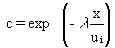

4.6 CHEMICAL REACTIONS
For
computation of long-term effects, the near-field reactions during airborne
transport are not expected to be important for most materials. However,
in special cases, the resultant plume depletion fraction is computed using
Equation 61.
Chemical reactions that are fast enough to significantly change the airborne
concentrations within the plume may be accounted for using a first-order
degradation coefficient (ë). The fraction of the contaminant lost
to degradation can be expressed as follows (EPA 1979):

(61)
where c = chemical degradation term in Equation 51.